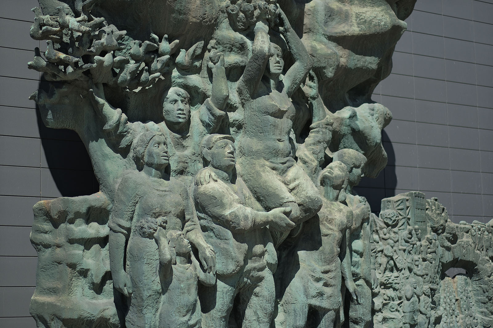
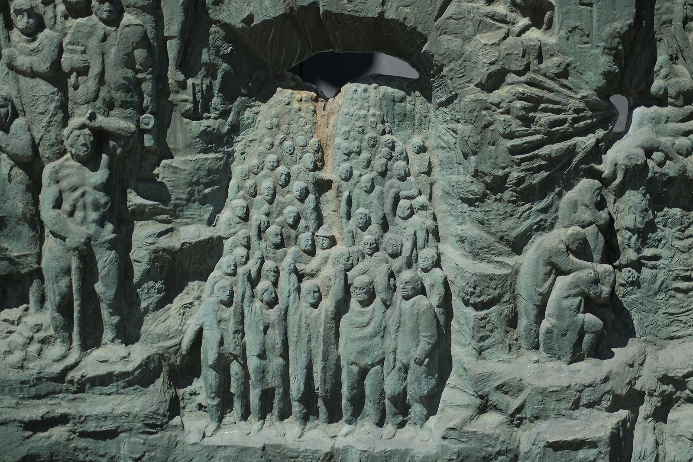
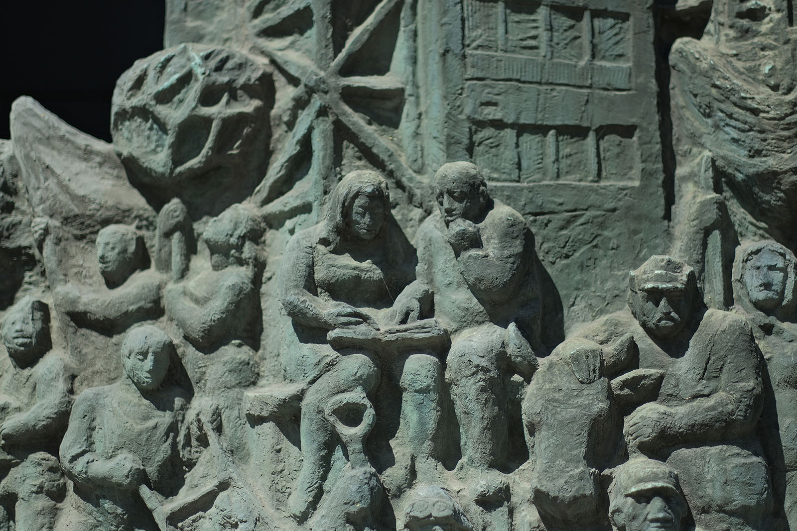
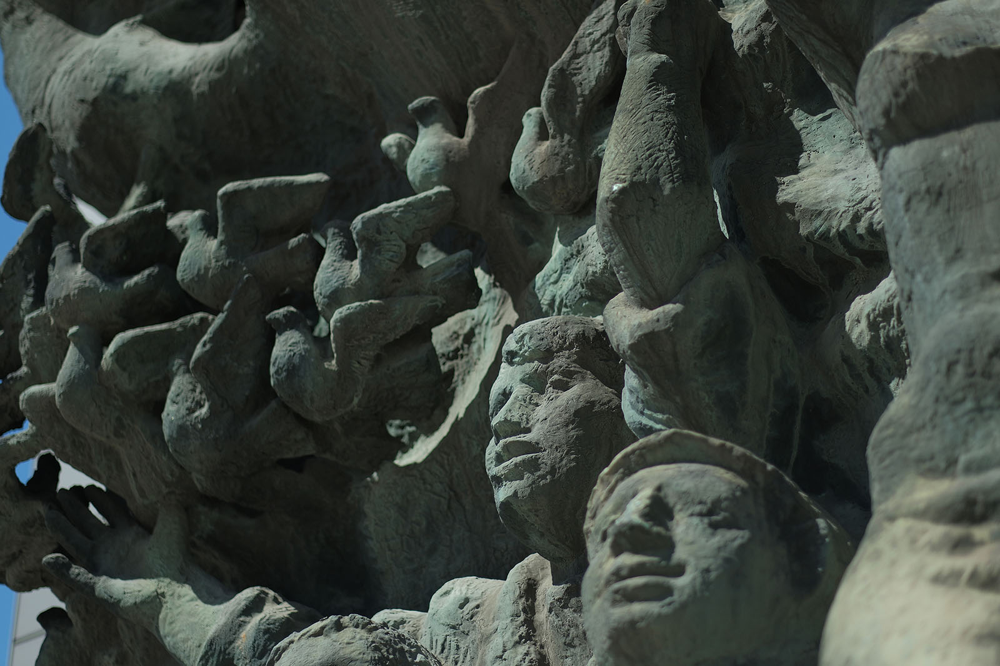
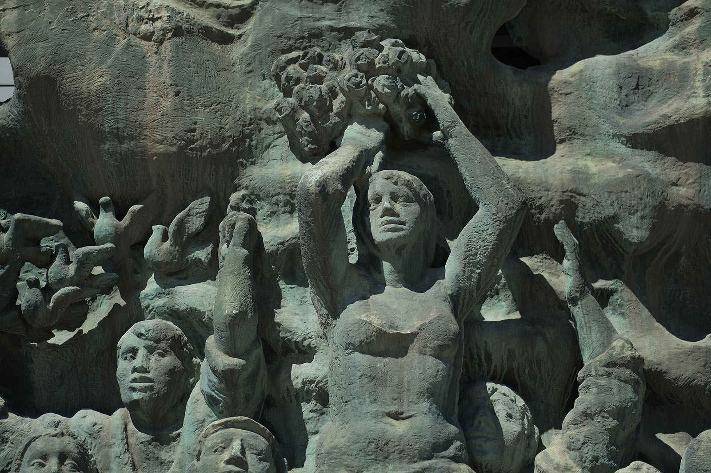
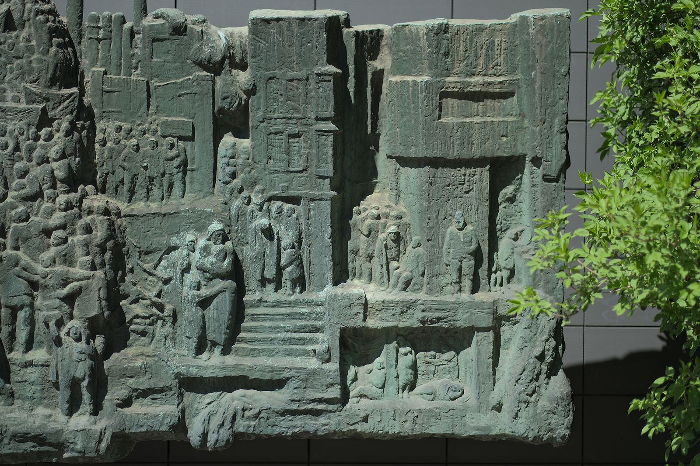
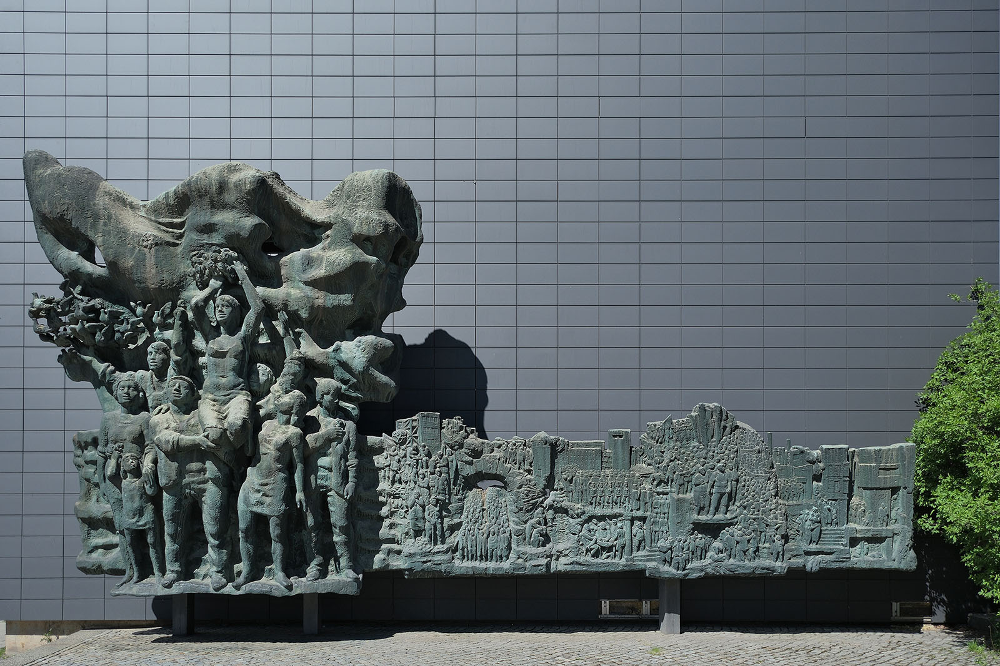

Recherche und Werkbeschreibung: Roman Pilz. Text und Fotografien wechseln sich wie in einem Magazin ab. Ein Klick auf ein Bild öffnet die Großansicht.
Das 1977 fertiggestellte und am 6. Oktober, dem Vortag des Staatsfeiertages zur Gründung der DDR, eingeweihte Relief illustriert die Geschichte der deutschen Arbeiterbewegung vom Kaiserreich über die Weimarer Republik und die nationalsozialistische Diktatur bis zur Gründung der DDR.
Das monumentale, etwa 6 Meter hohe und doppelt so breite Bronzerelief lässt sich von rechts nach links lesen: Erst leidvoller Kampf unzähliger einzelner Menschen, dann Sieg der im Verlauf der Geschichte durch vielfältige Ausbeutung und Unterdrückung zu Bewusstsein gekommenen Arbeiterklasse. Am linken Rand steht hoch aufragend das große, fast vollplastische Relief, das unter einer wehenden roten Fahne den Sieg der Arbeiterklasse in der Gegenwart der DDR darstellt. Nach rechts fügt sich flacher und schmaler gearbeitet ein langer Bildstreifen mit dem dialektischen Verlauf der Arbeitergeschichte in der Vergangenheit an.
Der Gegensatz der Bildteile ist offensichtlich: Größe, Freude und Freiheit links - rechts ein Mahlstrom von Einzelschicksalen. Menschen massenhaft, ein Auf und Ab der Konturen wie der Zeitenläufe. Flach gearbeitet und nur schlaglichtartig in einzelnen Szenen konkretisiert, werden einzelne Kristallisationspunkte des Gangs der Arbeiterklasse in einem ansonsten schwer deutbaren Amalgam der Bewegungen herausgestellt. Klar zu erfassen sind existenzielle Not von Jung und Alt, Einzelnen und Familien in Armut, städtischer Enge und drückender Fabrikarbeit.
Zwischen verborgenen Kammern, Nischen und Tiefen, über Stufen, Stiegen und expressionistisch anmutende Kristallberge, unter mittelalterlichen und neuzeitlichen Wachtürmen wird die Ausbeutung der Mehrheit der Menschen im Kapitalismus sowie deren Instrumentalisierung und Vernichtung in den Weltkriegen dargestellt. Rechts, wohl in den Zeiten der ersten deutschen Republik, scheinen erste Formen der gemeinschaftlichen Organisation Hoffnung zu machen.
Anführer und Demonstrationen unter Bannern und Fahnen steigen nach oben - aber gesichtslose Soldaten, Panzer und beineschwingende Revuetänzerinnen in der Mitte zeigen, wie Militarismus und Faschismus erst zur vollkommenen Zerstörung führen müssen. Unter einem großen Bogen, der gleichsam für ein Bergwerk, einen Bunker oder das Konzentrationslager stehen kann, ziehen die Opfer des Nationalsozialismus. Sie mahnen und bahnen den Weg zum Wiederaufbau im Arbeiter- und Bauernstaat.
Neben seiner oberflächlichen, scheinbar im ideologischen Kosmos der DDR gefangenen Bedeutung kann das von Johann Belz über Jahre entworfene Kunstwerk eine zweite und dritte Geschichte erzählen. Wie kein anderes städtisches Kunstwerk zeigt sein Entstehungsprozess, wie schicksalhaft verwoben öffentlicher Auftrag und individuelle Künstlerbiografie im früheren Karl-Marx-Stadt sein konnten. Und es zeigt, dass ein einzelnes Werk, egal welcher Epoche, immer nur im Kontext seiner Zeit und seiner Rezeption ganz begreifbar ist.

Man kann sagen, dass Belz' Karriere als Künstler idealtypisch für die Hoffnungen und Versprechen des "neuen Deutschlands" im Sozialismus ist. Aus einfachen, bäuerlichen Verhältnissen stammend, ungelernt zum Kriegsdienst verpflichtet und schwer verwundet, kam er als Heimatvertriebener nach Klingenthal. Dort schnitzte er sich mit Geschick eine Prothese als Ersatz für das im Krieg verlorene Bein. Der Wunsch des Autodidakten, künstlerisch zu arbeiten, brachte ihm neben der Schnitzerei auch eine Beschäftigung als Werbemaler bei der Wismut.
Sein Talent wird erkannt und so wird ihm das Studium in Dresden ermöglicht - eine unwahrscheinliche Aufstiegsgeschichte, die der Künstler sicher auch den politischen Umständen positiv anrechnete. Doch schon der erste öffentliche Auftrag, der jedem ordentlichen Künstler in der DDR bereits als Absolvent regelmäßig vermittelt wurde, zeigt auch das Konfliktpotential des Künstlerdaseins in der DDR. Individuelle Fähigkeiten, Neugier und Ideen müssen ständig mit den politisch Verantwortlichen geklärt werden. Damit einher gehen Verhandlungsprozesse und Kritik, die nicht jedem Charakter förderlich sind.
Schon 1959 in Karl-Marx-Stadt angekommen, sollte Belz eine Brunnenfigur entwerfen. Verschiedene Entwürfe und Modelle entstanden in den nächsten Jahren, wurden dann aber abgelehnt und verworfen - erst Jahre später, 1974, wurde das Werk in seiner endgültigen Form, als Don Quichotte auf einem Pferd, abgeschlossen (das Werk wanderte schließlich mehrfach - vom Posthof bis in das Foyer der Chemnitzer Oper). Ein in derselben Zeit (1959/60) für das neuerrichtete Heizkraftwerk Nord entstandenes Relief als Türeinfassung trägt den Titel "Sozialer Aufbau und technischer Fortschritt in der DDR" - die optimistischere Tendenz führte in diesem Fall wohl zu einem reibungsloseren Ergebnis, das bis heute an der Blankenburger Straße 2 zu bewundern ist.

Das Relief, das schließlich an der ehemaligen Otto-Grotewohl-Straße (Bahnhofstraße) am bereits 1964 fertiggestellten Gebäude des Zentralinstituts für Fertigungstechnik des Maschinenbaues (ZIF) aufgestellt wurde, ist Zeugnis ähnlicher Kämpfe - des Künstlers mit den öffentlichen Auftraggebern. Bereits 1968, wohl zusammen mit dem "Plan zur bildkünstlerischen Außengestaltung des Stadtzentrums", der auch die Gruppe um Joachim Jastram mit den Arbeiten zu Brechts Lobgedichten auf der Brückenstraße betraute, erhielt Belz den Zuschlag für das Relief.
Ursprünglich geplant als Denkmal für den Chemnitzer Kommunisten Fritz Heckert, wurde der erste Entwurf schnell abgelehnt. Die Aufgabenstellung wurde um 1970 neu und weiter gefasst als "Weg der roten Fahne" - vielleicht inspiriert vom 1968/69 am Kulturpalast in Dresden realisierten großen Historien-Wandbild mit demselben Titel, das von einem Kollektiv unter Gerhard Bondzin geschaffen wurde.
Während im Verlauf der 1970er Jahre Stück für Stück die Elemente der Brückenstraße als sozialistische Prachtstraße realisiert wurden - 1971 die feierliche Fertigstellung des ersten Bauabschnitts des SED-Gebäudes zusammen mit Lew Kerbels gewaltiger Marx-Büste, 1972 die Fertigstellung des Ensembles mit den "Lobgedichten" an der mittlerweile Karl-Marx-Allee genannten Brückenstraße 4, 6 und 8 und 1974 die Fertigstellung der Stadthalle - musste Belz weiter mit seinem Auftrag ringen.

Parallel zum Relief, das Belz weitestgehend allein, nur mit der Unterstützung eines Stuckateurmeisters in einer leerstehenden Halle am alten Heizkraftwerk an der Nordstraße umsetzte, schuf der Künstler wichtige andere Metallarbeiten, die seine mehr zur Abstraktion strebende Tendenz dieser Zeit spürbar machen - den Klapperbrunnen (1968), das kristalline Wandrelief für die Mensa der TU an der Reichenhainer Straße (1970) und den Blütenstern für das Hotel an der Stadthalle (1973/74). Ein erster Entwurf der Fahnenplastik zeigt eine ähnlich abstrakte, strahlenförmig in Falten gelegte Form, die sich nach oben verbreitert - noch keine Figuren und alles andere als sozialistischer Realismus.
Mit der Zeit aber wurde die figürliche Gestaltung konkreter, allerdings auch ausufernder und kontrastreicher. Zugleich belegen persönliche Wegbegleiter des Künstlers, dass er sich mit der Gestaltung des Reliefs immer schwerer tat - es belastete ihn wohl körperlich und psychisch. Als er sich im März 1976 das Leben nahm, blieb das Werk teilweise unvollendet.
Die Partie links des Hauptteils mit der jubelnden Blumenträgerin, die auf Arbeiterschultern neben fröhlichen Menschen unter Friedenstauben und wehender Flagge ihre Hand gen Himmel streckt, bleibt leer, man könnte sagen, roh und ungestaltet wie die Zukunft. Es waren die Kollegen Siegfried Birkholz, Harald Stephan, Frank Dietrich und Volker Beier, die nach Aussagen der Künstlerwitwe den Figuren auf der rechten Seite den für den endgültigen Guss in der Kunstgießerei Lauchhammer nötigen Feinschliff gaben.

So wurde das Relief erst 1977 aufgestellt - es steht wie andere monumentale Wandbilder und Reliefs in den 1970er Jahren für den feierlichen Abschluss der Aufbauphase der DDR und ein neues Geschichtsbewusstsein im real existierenden Sozialismus, vergleichbar etwa mit dem riesigen Bronzerelief "Aufbruch" (1973), das ursprünglich über der Tür des Rektoratsgebäudes der Universität Leipzig aufgestellt wurde und nach kontroversen Diskussionen an einem neuen Ort aufgestellt wurde.
Doch im Vergleich mit dieser und weiteren Arbeiten, beispielsweise in Berlin, Cottbus und Halle, wird die Monumentalität des Chemnitzer Geschichts-Reliefs gerade durch die Kleinteiligkeit im historischen Bildteil, durch seine Brüche und nicht zuletzt auch durch die Geschichte des Künstlers wesentlich konterkariert.
Wer vor dem Bild stehenbleibt und ihm seine Aufmerksamkeit schenkt, kann sich in einer Art Wimmelbild verlieren: Die Massenbewegungen des 20. Jahrhunderts sind dem Betrachter im wörtlichen Sinn näher vor Augen als der Pathos der "Sieger". Und selbst einer niederländischen Künstlerin, die in jüngerer Zeit zu einem Arbeitsbesuch in Chemnitz weilte, fiel das Relief auf - sie nahm es als Ausgangspunkt für eigene Recherchen und nahm Abdrücke vom Relief, die sie als Negativformen in farbigem Silikon präsentierte.

Schade, und wohl auch der Grund, warum das große Bild sich sehr leicht "wegsehen" lässt, ist die Anbringung einer neuen Vorsatzfassade bei einer Renovierung des Gebäudes aus sehr ähnlich gefärbten, schwarzen Platten. Ursprünglich hob sich die dunkel patinierte Bronze kraftvoll von einer hellen, sandsteinfarbenen Fassade ab.

Der Pyrrhussieg der Arbeiterklasse
„Kampf und Sieg der revolutionären deutschen Arbeiterklasse“ (1970 – 1976) von Johann Belz
